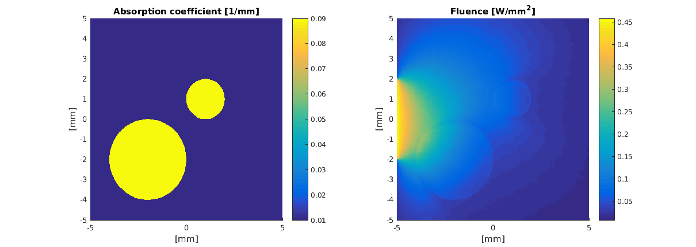

Working with NetGen: netgentest.m
This example demonstrates how to import a mesh from Netgen. The python source code for Netgen that generates the mesh can found in the examples/netgen_square_with_two_circles.py. You can also view the Python source code here
Contents
Import the NetGen file
Netgen meshes can be imported using 'importNetGenMesh'. In addition to the mesh structure, it returns the regions in the vol file as cell arrays. Each row in these arrays contains a vector that holds the indices of a region (in the medium or in the boundary). Netgen files may also contain names for the regions. These are returned in 'region_names' and 'boundary_names' and can be used to find the correct indices for each region (see 'Set optical parameters and light sources').
clear all; [vmcmesh regions region_names boundaries boundary_names] = importNetGenMesh('square_with_two_circles.vol');
Obtain indices and remove incompatible boundaries from the mesh
Netgen and other volumetric mesh generators often generate meshes that have boundary elements between volume elements, i.e. boundaries that are contained within two regions of a medium. These must be removed before further use of the mesh.
indices_for_background = cell2mat(regions(1)); indices_for_circles = cell2mat(regions(2)); % boundaries 1 and 2 span the outer boundary % % 1 - the rest of the boundary % 2 - boundary for the lightsource indices_for_outer_boundary = [cell2mat(boundaries(2)); cell2mat(boundaries(1))]; vmcmesh.BH = vmcmesh.BH(indices_for_outer_boundary,:); % The indices for the lightsource was contained in the first elements indices_for_lightsource=1:size(cell2mat(boundaries(2)),1); % bote that % In Matlab 2016b and later it is possible to find indices using % % indices_for_lightsource = cell2mat(boundaries(find(contains(boundary_names,'lightsource')))); % % i.e. strings can be used to extract regions.
Set optical parameters and light sources
The return values can be used to assign optical coefficients, lightsources and other conditions.
vmcmedium.absorption_coefficient(indices_for_background) = 0.01; % absorption coefficient [1/mm] vmcmedium.scattering_coefficient(indices_for_background) = 1.3; % scattering coefficient [1/mm] vmcmedium.scattering_anisotropy(indices_for_background) = 0.9; % scattering anisotropy parameter [unitless] vmcmedium.refractive_index(indices_for_background) = 1.3; % refractive index [unitless] vmcmedium.absorption_coefficient(indices_for_circles) = 0.09; vmcmedium.scattering_coefficient(indices_for_circles) = 1.3; vmcmedium.scattering_anisotropy(indices_for_circles) = 0.5; vmcmedium.refractive_index(indices_for_circles) = 1.5; vmcboundary.lightsource(indices_for_lightsource) = {'cosinic'}; % cosine directed light profile
Run the Monte Carlo simulation
%vmcmesh.BH(1,1) = 1000;cd
solution = ValoMC(vmcmesh, vmcmedium, vmcboundary);
Initializing MC2D using 16 threads... Computing... ...done Done
Plot the solution
figure('rend','painters','pos',[10 10 1200 400]) h = subplot(1,2,1); hold on; patch('Faces',vmcmesh.H,'Vertices',vmcmesh.r,'FaceVertexCData', vmcmedium.absorption_coefficient(:), 'FaceColor', 'flat', 'EdgeColor','none'); xlabel('[mm]'); ylabel('[mm]'); c = colorbar; hold off title('Absorption coefficient [1/mm]'); h=subplot(1,2,2); hold on; patch('Faces',vmcmesh.H,'Vertices',vmcmesh.r,'FaceVertexCData', solution.element_fluence, 'FaceColor', 'flat', 'EdgeColor', 'none'); xlabel('[mm]'); ylabel('[mm]'); c = colorbar; title('Fluence [W/mm^2]'); hold off